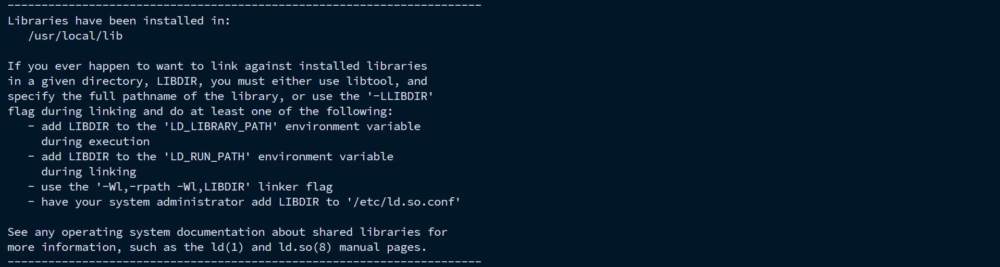
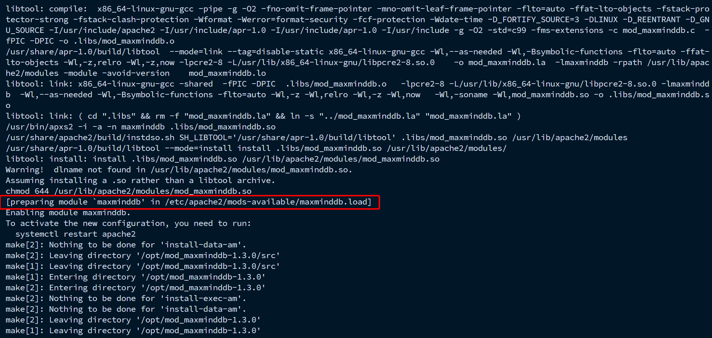
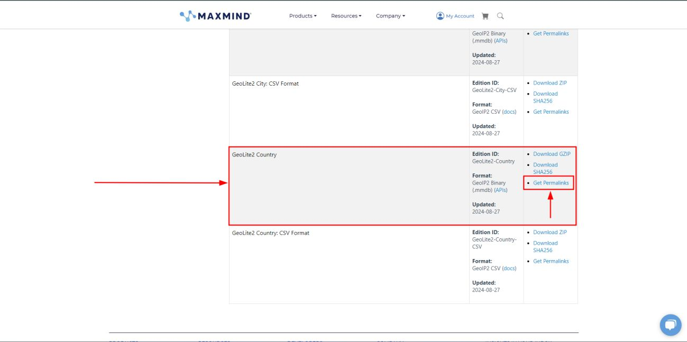
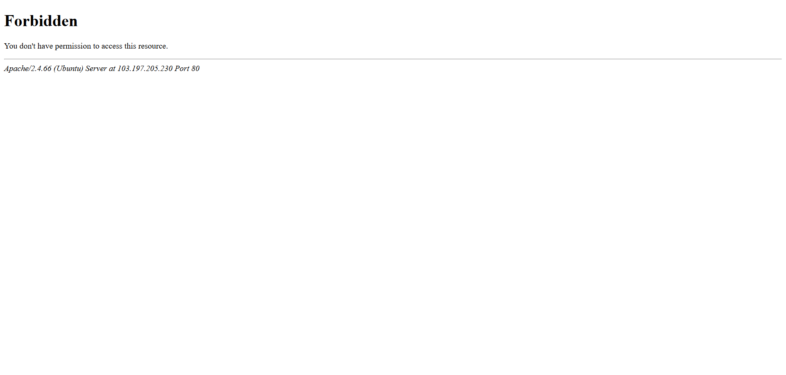

Setting Up Mod Maxmind DB
mod_maxminddb is an Apache module that allows the server to query MaxMind DB files to identify information about a website visitor based on their IP address. It is the modern successor to the now-deprecated mod_geoip . It basically allows Apache to determine a client’s geographic and network-related information—such as country, city, ASN, or organization—based on the client IP address.
Now let’s work on installing the mod_maxminddb using the latest MaxMind Database. The mod_maxminddb is also known as mod_geoip v2.
Prerequisites - (Reference )
This module requires Apache 2.2 or 2.4 to be installed, including any corresponding “dev” package, such as apache2-dev on Ubuntu.
You should have apxs or apxs2 in your $PATH.
You also must install the libmaxminddb C library.
Installing libmaxminddb
Download and extract their latest official release from libmaxminddb GitHub Page.
wget https://github.com/maxmind/libmaxminddb/releases/download/<version>/libmaxminddb-<version>.tar.gz
tar -xzvf libmaxminddb-<version>.tar.gz
cd libmaxminddb-<version>
Replace the <version> with latest version following their GitHub libmaxminddb Release page.
Next, to install it, run the following commands,
./configure
make
make check
make install
ldconfig
After installing, the libmaxminddb library will be available at /usr/local/lib
If everything goes well, you will receive this output in the prompt. Refer to the image below for a high level view,
{kind=link}
Note
You can skip the make check step but it’s always good to know that tests are passing on your platform.
The configure script takes the standard options to set where files are installed such as --prefix, etc. See ./configure --help for details.
If after installing, you receive an error that libmaxminddb.so.0 is missing you may need to add the lib directory in your prefix to your library path.
On most Linux distributions when using the default prefix (/usr/local), you can do this by running the following commands,
sudo sh -c "echo /usr/local/lib >> /etc/ld.so.conf.d/local.conf"
ldconfig
Otherwise, you can skip this step.
Installing mod_maxminddb
Install the required apache2 dev package,
apt install apache2-dev
Next, download and extract the mod_maxminddb latest official release from their mod_maxminddb GitHub page.
wget https://github.com/maxmind/mod_maxminddb/releases/download/<version>/mod_maxminddb-<version>.tar.gz
tar -xzvf mod_maxminddb-<version>.tar.gz
cd mod_maxminddb-<version>
Replace the <version> with latest version following their GitHub mod_maxminddb Release page.
To install the module, run the following commands,
./configure
make install
If everything goes well, you will this dialogue preparing module `maxminddb' in /etc/apache2/mods-available/maxminddb.load in the prompt
Refer to the image below for a high level view,
{kind=link}
So far the installation of mod_maxminddb is complete.
Installing the Maxmind Database
Now let’s pay attention to this step carefully. Coming this far you might get a little bit confused whether we installed the module or the database. We actually installed the module only; the database doesn’t come with the installation procedure.
So, to install the Maxmind Database from MaxMind we need to create an account in their portal. GeoIP basically has two versions of databases, one is free and the other is paid. Well, the paid one comes with comes with some distinct features of course, but the free version gets most of the jobs done any ways. I would say both of them are highly reliable.
Here, we are going to go with the free version.
Go and Sign Up for an account to get access to the GeoLite Database from the link. Once you are done creating the account, head over to Manage License Keys and generate a key and keep it safe and saved for future use, as we are going to need it for the database installation.

After generating the key, it will also show your user along. Remember to keep is safe and secured as well, case it will also be need for the database installation.

You can also checkout the procedure of how you can keep your databases up to date as geoip2 receive weekly updates. I am not demonstrating that here as, it is already well documented in their website and you can easily access the page via clicking that link from your account.
Now head over to the Download Files

And then get the Permalinks of GeoLite Database.
{kind=link}
Finally run this command in your Machine to download the GeoLite2 Database using your user id and key that we have obtained earlier.
wget --content-disposition --user=YOUR_ACCOUNT_ID --password=YOUR_LICENSE_KEY '<permalink_URL>'
Replace --user, --password & <permalink_URL> with your actual credentials. Once the downloading has finished Extract .tar.gz file.
Tip
For more detailed information regarding downloading and automatically updating the databases, refer to their official documention about Using GeoIP Update .
So far installation of the database is complete.
Configuring the mod_maxminddb Module
Now, we need to configure the mod_maxminddb module. Head over to the /etc/apache2/mods-available directory and create a file named maxminddb.conf,
which will be the actual configuration file of the MaxMindDB module.
Apply the directives in the configuration file as given below,
MaxMindDBEnable On
MaxMindDBFile COUNTRY_DB </path/to/maxmind/database/.mmdb/file>
MaxMindDBEnv COUNTRY_CODE COUNTRY_DB/country/iso_code
MaxMindDBNetworkEnv COUNTRY_DB COUNTRY_NETWORK
MaxMindDBSetNotes On
<Directory /var/www>
SetEnvIf COUNTRY_CODE ^(US|SG|NL|RU|DE|FR|BD) BlockCountry
<RequireAll>
Require env COUNTRY_CODE
Require not env BlockCountry
</RequireAll>
</Directory>
Replace </path/to/maxmind/database/.mmdb/file> with the actual path to the country database file. You can also specify the countries to be blocked as you like in
the ^() block as you like.
Note
In this case scenario, only the database related to country aka COUNTRY_DB was used,
where countries with their Alpha-2 Code are used to block the specified country. This is more like a black-listing approach.
Database related to cities can also be used, refer to their MaxMindDBFile Directive
and keeping following along to know how to use the CITY_DB.
Tip
Cases may vary depending on situations and scenarios, for which it is highly recommended to explore various use cases that would serve the cause. Follow along the Usage Section to have a clear understanding of its directives and use cases.
Enabling mod_maxminddb Module
First check if the maxminddb module is enabled,
apache2ctl -M | grep maxminddb_module
If it’s enabled, it will show an output like maxminddb_module (shared).
Otherwise, if you don’t find anything similar, run the command below to enable it,
a2enmod maxminddb
Then finally restart the apache2 server to put it into action.
systemctl restart apache2
You shouldn’t receive any error is everything is alright.
Testing the mod_maxminddb Module
In order to test the module, we will be requiring a VPN from the countries specified to be blocked. Set up a VPN connection and trying access the http server via your browser using the apache2 server URL
It should return a 403 Forbidden status in response, blocking your access.
Refer to the image below for a high level view,
{kind=link}
Finally, from here, this concludes the setting up of Mod Maxmind DB